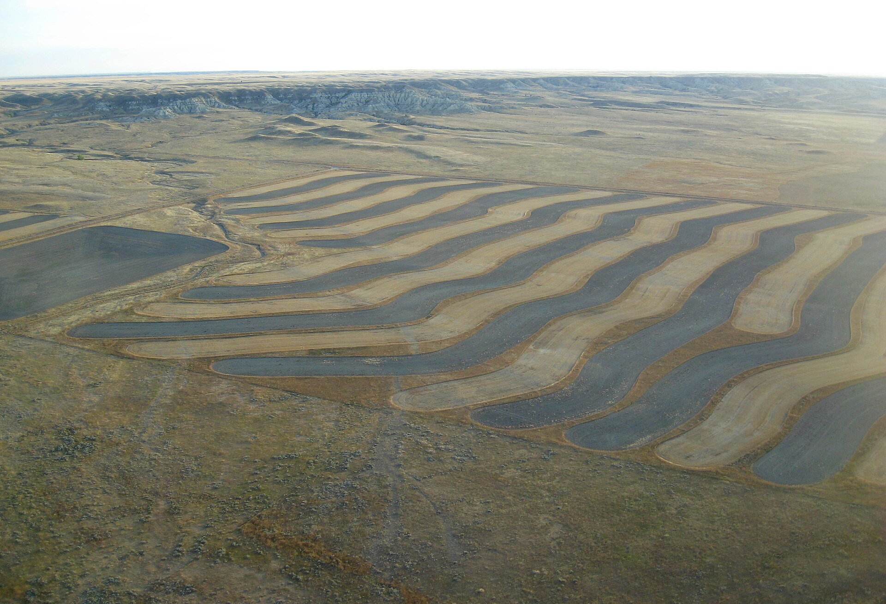

Contour ridges & furrows
Ridges and furrows along the contour that hold rain in the field

What it is
Contour ridges and furrows are small earth ridges and furrows – or simply ploughing and chiselling done along the contour – that intercept the thin sheet of rainwater running off a field and pond it in place, so it infiltrates where it falls instead of running away. It is the simplest of the in-field water-conservation tillage techniques: the soil itself becomes the store, with no separate catchment (Oweis, 2001).
On cracking clay soils the same idea takes a slightly different form: contour or chisel ploughing breaks the hard surface crust and cuts the water lost down deep cracks, so more of each storm stays in the root zone. In the WOCAT classification these belong to the in-situ moisture conservation group, where rain is held on the very spot where it lands.
How it works
- Plough or ridge on the contour, across the slope, so every ridge and furrow runs level and holds water rather than channelling it downhill
- Space the ridges to suit the crop and the rainfall, so the furrows pond runoff without overtopping
- On cracking vertisols, chisel- or contour-plough to break the surface crust and cut deep-crack water loss
- Combine with crop residue or mulch on the surface to slow runoff further and cut evaporation
- Re-form the ridges each season, as tillage and rain gradually flatten them
Key facts
- WOCAT group
- In-situ moisture conservation
- Suitable slope
- low–medium
- Soils
- medium–heavy / cracking clay
- Yield example
- sorghum 1.13 → 1.82 t/ha (chiselling + contour plough)
- Rainfall
- ~300–600 mm (vs crop need 400–500 mm)
- Best for
- field / cereal crops
Yield figures from the Gadaref (Sudan) watershed trial, RWH Webinar Series Module 10.
Variants
- Contour furrows – simple furrows that pond and infiltrate runoff between rows.
- Contour / chisel ploughing – breaks the crust on cracking clay soils to cut deep-crack water loss.
- Valats (Algeria) – a deep trench cut per tree to hold runoff.
WOCAT classification
- Measures
- ASAgronomic · Structural
- WOCAT group
- In-situ moisture conservation
- Degradation addressed
- Water degradation (soil moisture)Soil erosion by water
Classified per the WOCAT SLM-Technologies classification and the four water-harvesting groups of Mekdaschi Studer & Liniger (2013).
✦Source and links
Drawn from the FAO / ICARDA Webinars Series on Rainwater Harvesting (NENA region, 2022):
- • Mekki Omer (ICARDA/ARC) – Module 10, Sudan watershed trial
- • Abdelmadjid Boulassel (INRAA, Algeria) – Module 1
- • Theib Oweis (ex-ICARDA) – Modules 1 & 4
Sources (APA, 7th ed.).
- Oweis, T., Prinz, D., & Hachum, A. (2001). Water harvesting: Indigenous knowledge for the future of the drier environments. ICARDA.
- FAO / ICARDA. (2022). Webinars series on rainwater harvesting (WEPS-NENA / Water Scarcity Initiative). Series flyer (PDF)